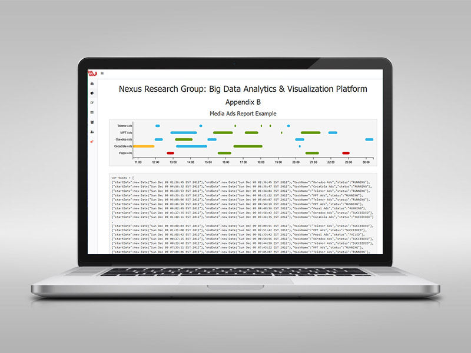
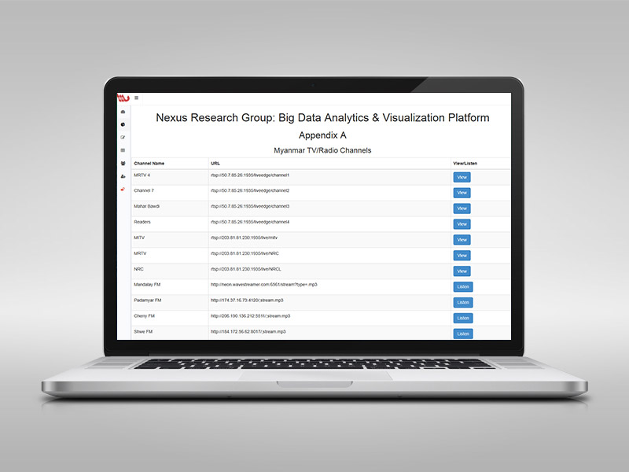

Prepared by Zaw Win Shein / Phyo Zaw Tun
Currently the TVc monitor team are collecting the TV streaming with many receivers. The cost per year is around 200 usd for each channel and there are more than 200 channels.
Researchers are now recording the data manually with data entry staffs and it's take more than 8 hours to complete 24 hours streaming. There are more than 200 TV Channels and in this way they need more than 100 receivers. Researchers need 10 to 25 data entry staffs to complete the process. The cost for the employee would be 2,000 usd to 5,000 usd.
TVc is one of the most expensive media channel in Myanmar. Brand companies purchase considerable amount of air-time on TVc of two or three months campaign.
The TVc analyse data is need before the management presonnel develop the TVc campaign stratategy. And also the TVc monitoring services is need while they makeing TVc campaign.
Our target would be all of those companies who is running TVc campaign and who would like to advertise TVc campaign.
There are very few competitor of TVc monitoring services in Myanmar. There's only one company as a competitor in Myanmar. The market is very blue ocean and there are a lot of giant fish.
We are planning to develop the web application with diffenent class of user authentication to access the analysed data as members.There will be free membership of free data access with general statistic for students and amature researchers, and permium membership with more specific infomation and anaylsed data for business use.
The subscription price will be reflect price of current makret situation and to be affordable for SMEs.

